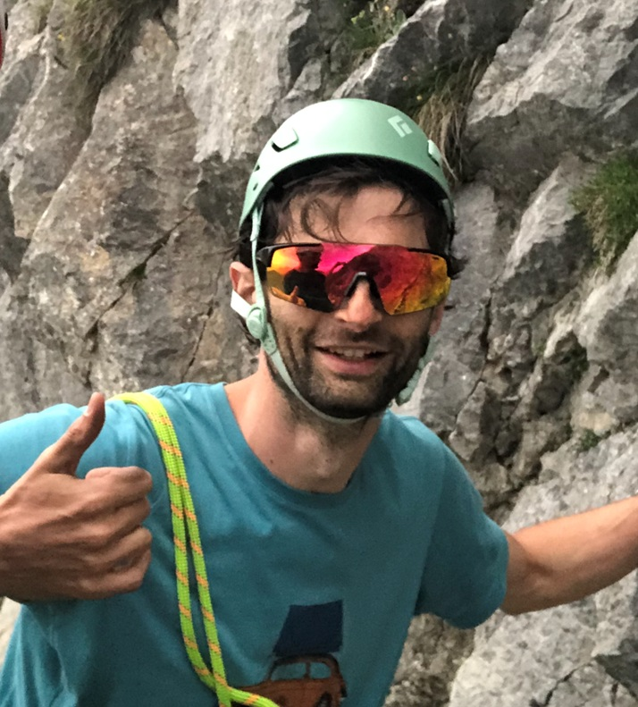

Luca Buratto
Contabile e statistico
Statistico per formazione, climber per passione, ottimizzatore per vocazione.
Il mio profilo
Dalla formazione in Statistica all'esperienza imprenditoriale in → in Bocconi, il mio percorso riflette una spiccata attitudine alla versatilità. Specializzato in Analisi Tecnica P&C e Contabilità Riassicurativa presso Assicurazioni Generali, ho affinato una visione analitica e rigorosa.
Attualmente mi occupo di contabilità generale e adempimenti fiscali, integrando queste responsabilità con una gestione logistica per l'editoria scolastica.
Competenze
-
Hard Skills
Specializzato in programmazione per l'analisi dati (Excel/VBA, SQL, R e Python) con certificazioni accademiche internazionali. Monitoro costantemente i trend Hi-Tech e AI. -
Soft Skills
Mentalità imprenditoriale, flessibilità e spiccate capacità organizzative. Credo nel valore del lavoro di squadra e nella crescita condivisa all'interno di team strutturati.
Progetti
-
YouActuary
Sharing economy applicata allo studio: materiale didattico per futuri attuari e statistici.
→ Visita il portale -
Tutto Fa Blog
Approfondimenti su finanza personale, psicologia e miglioramento continuo.
→ Esplora gli articoli -
LucaBurTs - YouTube (WIP)
Canale dedicato alla divulgazione accademica e tecnica.
→ Guarda i video -
Finanza Flash (WIP)
Alfabetizzazione finanziaria pratica per una gestione consapevole del patrimonio.
→ Vai al progetto
Hobbies e Passioni
-
Arrampicata sportiva
Il mio diario verticale: gradi, ascese e progetti tra roccia e resina.
→ Profilo su theCrag -
Scacchi
Strategia pura. Un allenamento costante per il calcolo delle probabilità.
→ Sfidami su Chess.com -
Libri
La lettura è il mio motore di aggiornamento.
→ Profilo su Goodreads -
Film & Series
Il mio laboratorio di storie e punti di vista.
→ Profilo su IMDb -
Finanza Personale
Approfondisco investimenti passivi e gestione consapevole delle spese, perché considero l’educazione finanziaria una leva concreta di autonomia, equilibrio e libertà personale. -
Spotify
→ Circolo del martedì Podcast-
Contatti
Sei interessato a collaborare a un progetto di analisi dati, automazione contabile o vuoi semplicemente scambiare due chiacchiere?